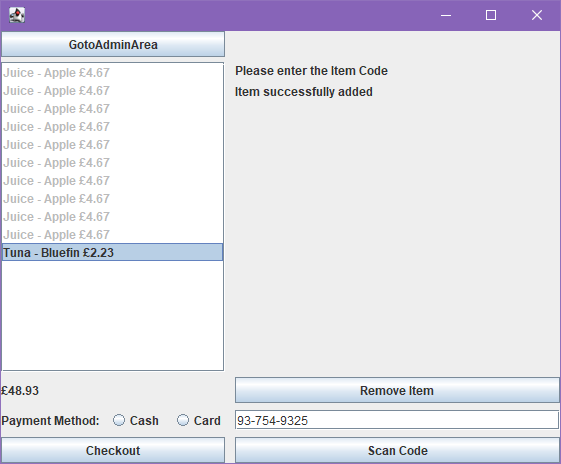
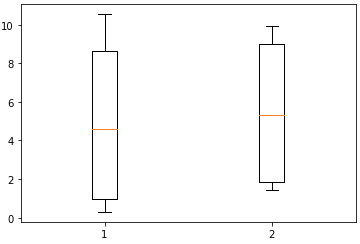

Here is where several past projects can be seen.
I've got several previous projects to look through which show off various skills, be it C#, Unity or Java.


AirBNB Form Crafted in Visual Studio
Links Github
As part of a University module, I made this form in Visual Studio utilizing C#.

Checkout Form made using Java
Links Github
As part of a University module, I made this checkout screen which utilizes Junit testing and MVC design patterns.

Random solution generator and Regression models
Links Github
As part of a University module, I used Python to both generate solutions to a posed problem involving scheduling and train, test and evaluate the performance of different regression models.